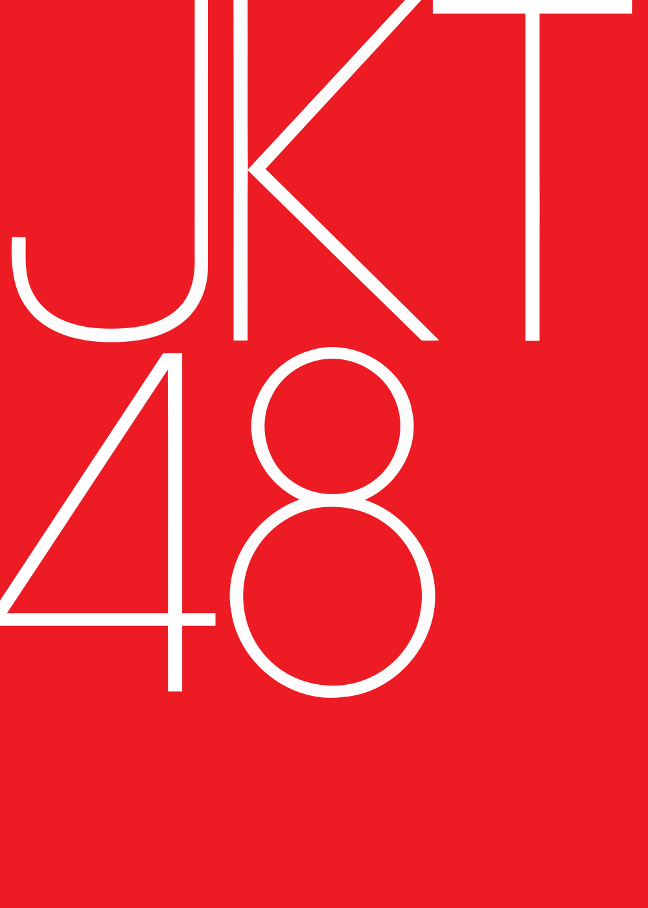

Judul Berita / Artikel
Berikut adalah tentang JKT48:
JKT48, dibaca "J-K-T forty-eight" dalam bahasa Inggris adalah grup idola perempuan asal Indonesia yang namanya berasal dari kode bandar udara IATA untuk wilayah metropolitan Jakarta ("JKT") dan grup idola Jepang AKB48, dimiliki oleh IDN (di Indonesia) dan dibawah lisensi dari Superball (anak usaha dari Vernalossom, dari Jepang). Dibentuk pada tahun 2011, grup ini merupakan grup saudari AKB48 yang pertama di luar Jepang[2] dan mengadopsi konsep "idols you can meet (idola yang dapat Anda temui)",[3] sebelum beralih menjadi "idols who will come to meet you (idola yang akan datang untuk menemui Anda)" pada bulan April 2018. Grup ini membuka Teater mereka sendiri untuk mengadakan pertunjukan rutin dengan nama "Teater JKT48" yang terletak di lantai 4 pusat perbelanjaan fX Sudirman di Jakarta Pusat, DKI Jakarta pada 8 September 2012, di mana para penggemar dapat menghadiri pertunjukan harian yang dapat berubah sewaktu-waktu pada saat ini.